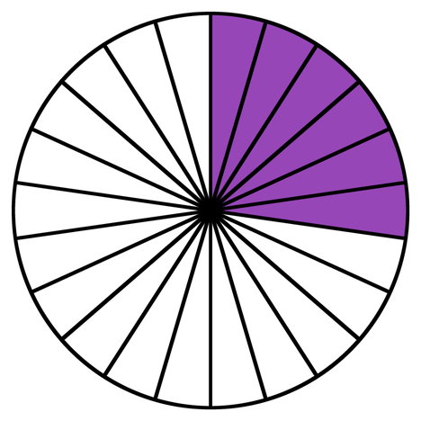
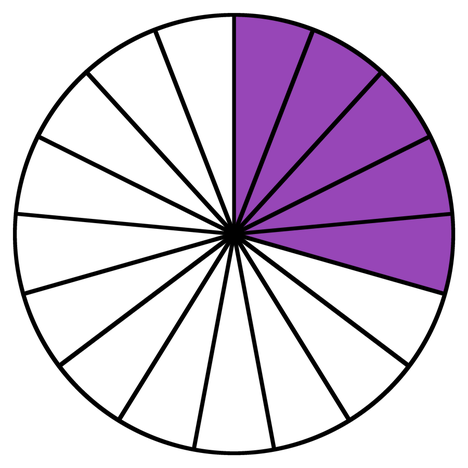
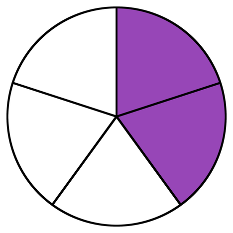

أنهينا مرحلة التعلّم، سننتقل إلى التدريب الأول ونجيب عن
3 أسئلة
يجب الإجابة بشكل صحيح عن سؤالين على الأقل.
في مراقبة الجودة في مصنع للمصابيح، تبين أن 4% من المصابيح المنتجة معيبة.
أيّ الجمل التالية هي الأصحّ؟
هذا غير دقيق،
هل نحاول مرة أخرى؟
دقيق!
لذلك إذا كانت 4% من المصابيح معيبة، فهذا يعني أن مصباحًا واحدًا
من كل 25 مصباحًا معيب.
يمكن أيضًا القول إنه من كل 100 مصباح تم فحصه، وُجد 4 منها معيبة.
تقريبًا... لنشرح:
لذلك إذا كانت 4% من المصابيح معيبة، فهذا يعني أن مصباحًا واحدًا
من كل 25 معيب.
يمكن أيضًا القول إنه من بين كل 100 مصباح تم فحصه، وُجد 4 منها معيبة.
طارق مشترك في باقة إنترنت خلوي تشمل 10 غيغابايت (GB) بسعر مخفّض.
خلال عطلة الحانوكا، شاهد طارق الكثير من مقاطع الفيديو، وفي نهاية الشهر تلقّى رسالة تفيد بأنه استهلك 30 غيغابايت (GB) من بيانات الإنترنت.
أي من الادعاءات التالية صحيح؟
هذا غير دقيق،
هل نحاول مرة أخرى؟
صحيح جدًا!
الكل هو باقة التصفح الأصلية – 10GB.
استخدم طارق 30GB. كم تساوي 30 من أصل 10 بالنسبة المئوية؟
أي أن طارق استخدم 300% من باقته (ثلاثة أضعافها).
أخطأتم، لا بأس — فنحن نتعلّم أيضاً من الأخطاء.
الكلّ هو باقة التصفح الأصلية – 10GB.
استخدم طارق 30GB. كم تساوي 30 من أصل 10 بالنسبة المئوية؟
أي أن طارق استخدم 300% من باقته (ثلاثة أضعافها).
في حفلة عيد ميلاد قُدِّمت ثلاث كعكات متطابقة، وقُطعت كل كعكة بطريقة مختلفة، وأُكل من كل منها جزء مختلف (مظلَّل).
طابِقوا كل جزء ملوّن مع التمثيل الصحيح له.



انقروا على الرسوم البيانية للتكبير
أخطأتم في إجابة واحدة على الأقل،
هل نحاول مرة أخرى؟
صحيح جدًا!
لتحديد التمثيلات المتكافئة يمكن توسيع الكسر أو تقليصه أو تحويله إلى نسبة مئوية.
أخطأتم في إجابة واحدة على الأقل، لنفهم السبب:
لتحديد التمثيلات المتكافئة يمكن توسيع الكسر أو تقليصه أو تحويله إلى نسبة مئوية.